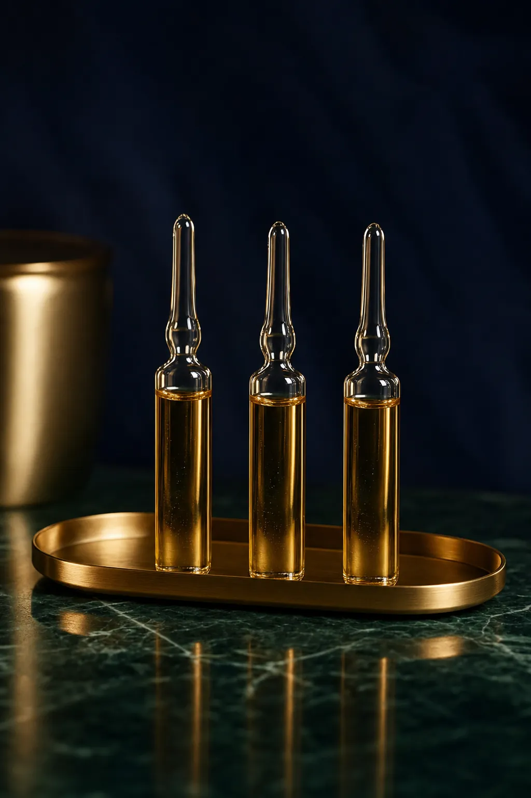
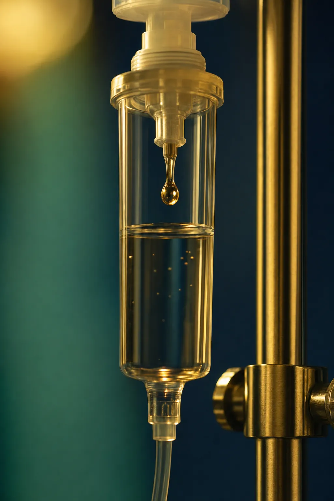
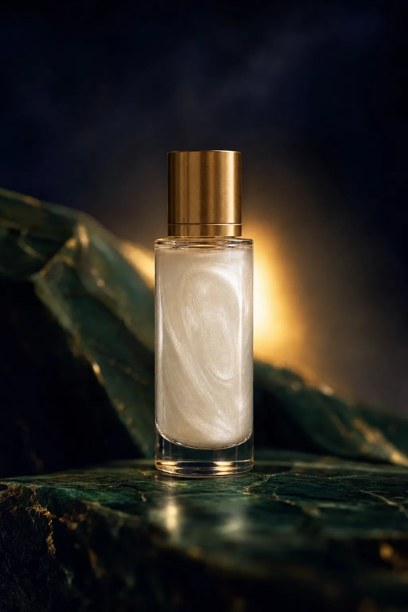
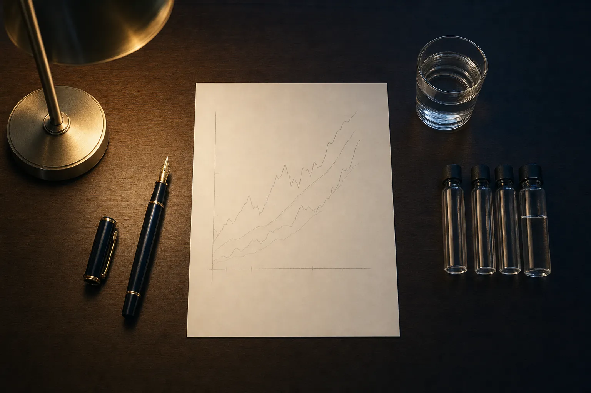
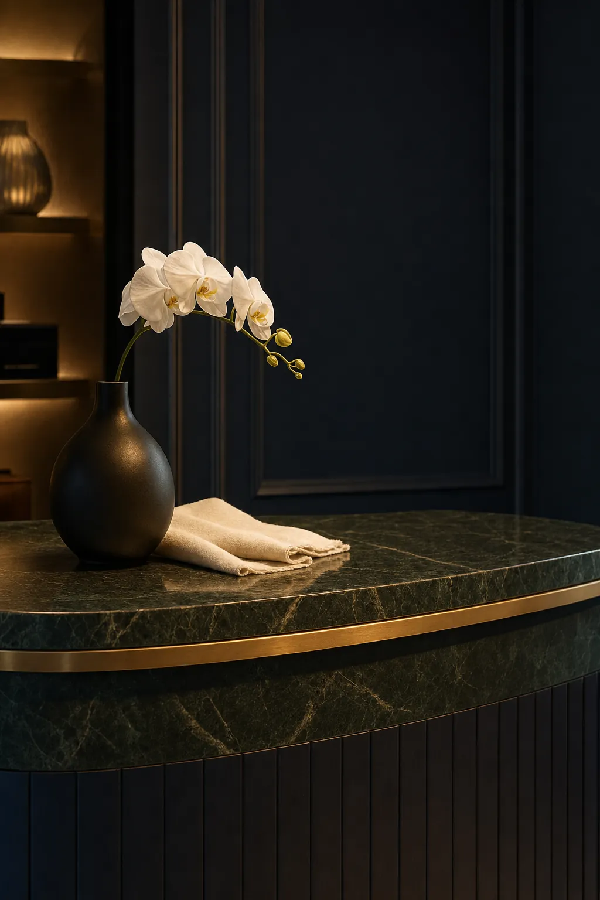
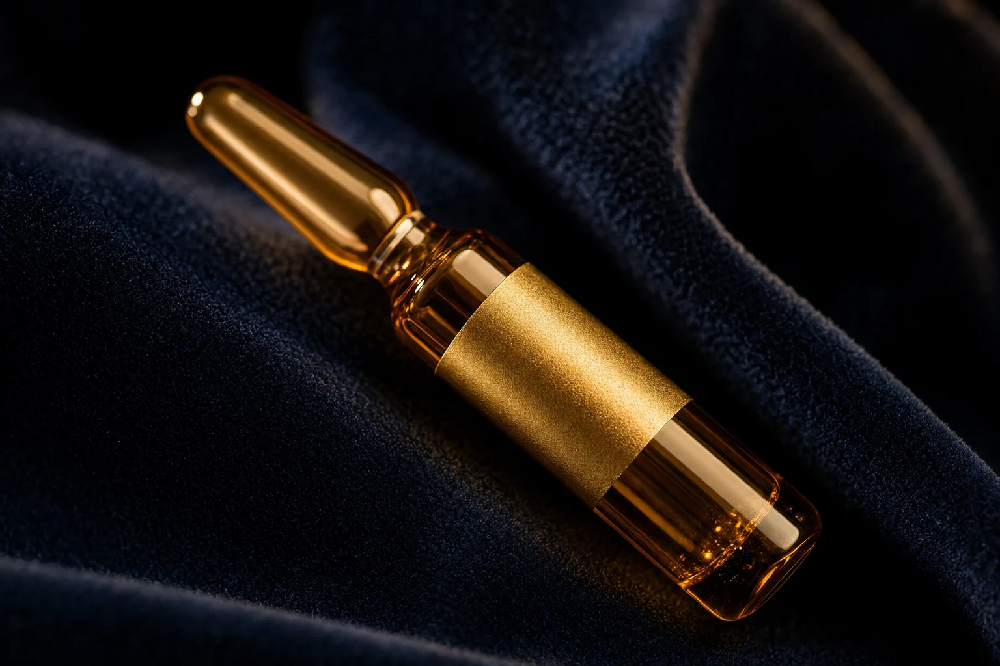
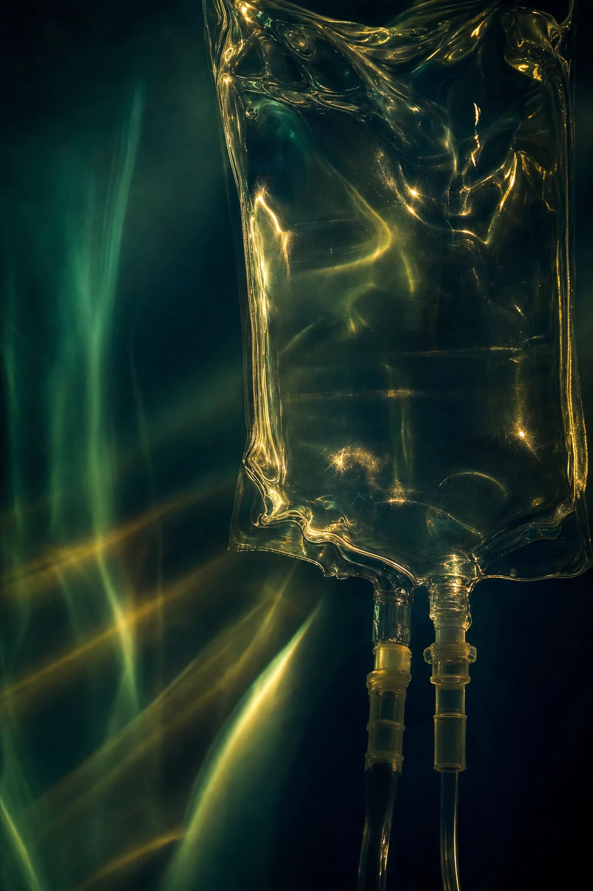
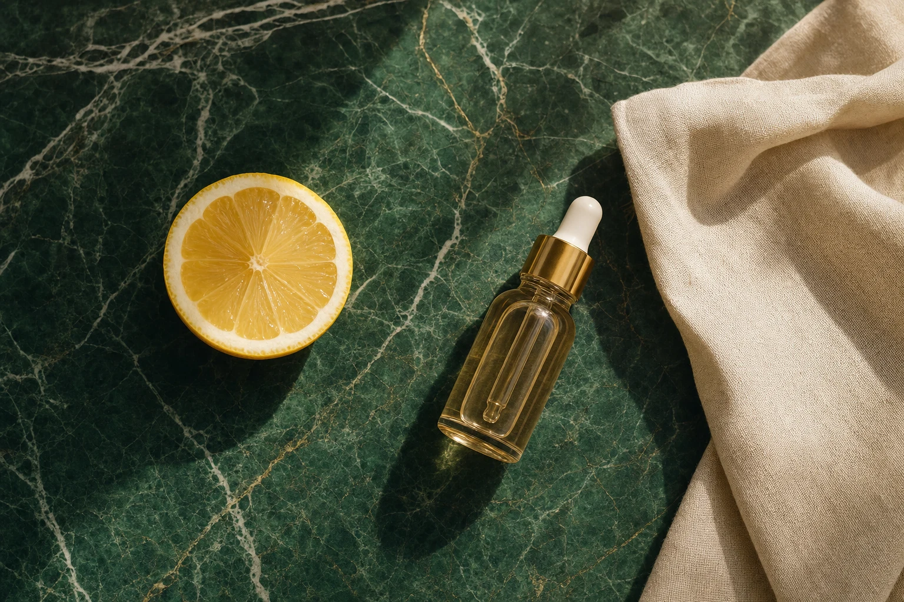
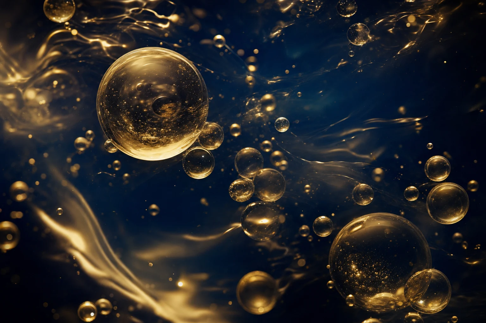
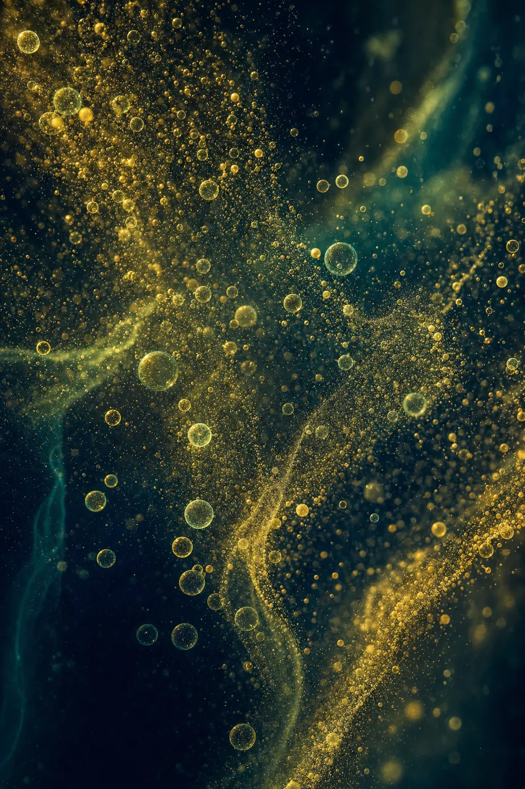

01 · Foundation
Anti-Aging Drip
Our entry formula for antioxidant support and everyday free-radical clearance.

IV Therapy
The same protocols, the same materials, the same standard in Taipei, Yangon and Ho Chi Minh City.
Programmes
Every programme starts from your history, examination and bloodwork. Composition and pace are set by your physician.

Our entry formula for antioxidant support and everyday free-radical clearance.

An amino-acid-based version of our foundation formula, for periods of depletion.
Metabolic and hepatic support, closing with a slow, separately administered antioxidant infusion.

An escalated course for accumulated stress, sleep loss and prolonged fatigue.

A concentrated vitamin C infusion, dosed and paced under physician supervision.

The classic B-vitamin, vitamin C, magnesium and zinc infusion.

A two-stage neuro-support protocol, offered after individual medical assessment.
A fast amino-acid infusion for athletes and heavy training loads.

Fluid replacement followed by slower antioxidant support for hepatic recovery.

An omega-3 emulsion with vitamin C and B-complex, for cerebral and cardiac support.
How a visit runs
01
Consultation and review of your history and goals.
02
Bloodwork where it changes the plan.
03
Your programme, written and explained.
04
Treatment in a private suite, 45–90 minutes.

Beyond the foundation
Some patients are assessed for options that go further than intravenous nutrition. These are discussed individually, never sold from a list.
Learn more →One to one
A private consultation with our medical team — your history, your goals, and an honest view of what is appropriate for you.
Request a consultation